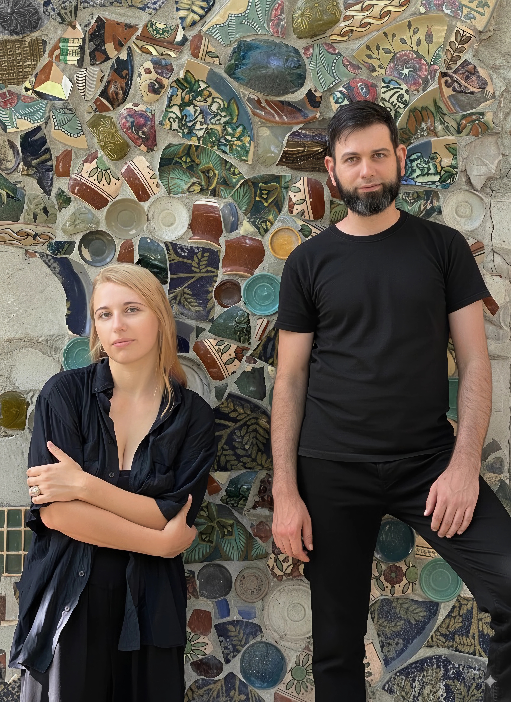

Our work unfolds at the intersection of environmental, site-specific, and land art. We see no boundary between human and environment – each inscribes itself upon the other in a fragile, shifting balance.
At the heart of our practice is the desire to play: to play with the landscape, to give and receive, to create moments that make viewers pause in disbelief.
Guided by concept rather than medium, we let each idea determine its own form.

Selected works


Contact
Email: landart.zhur.lok@gmail.com
Instagram: @land_art_zhurunova.lokatyr